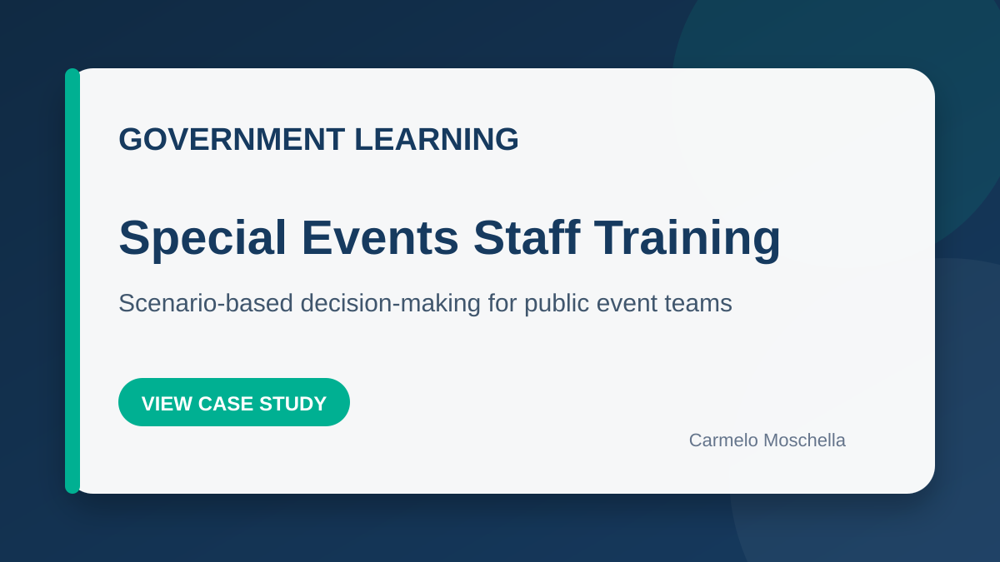
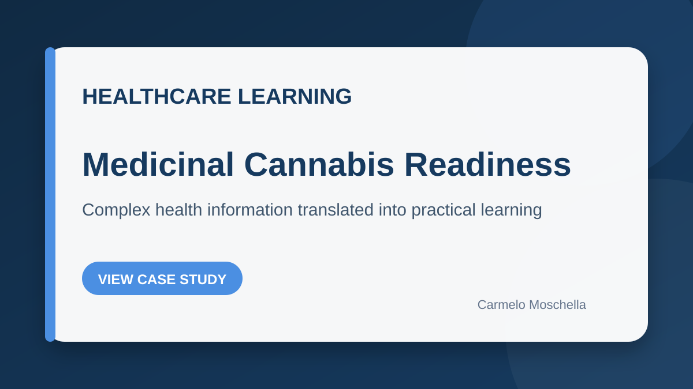
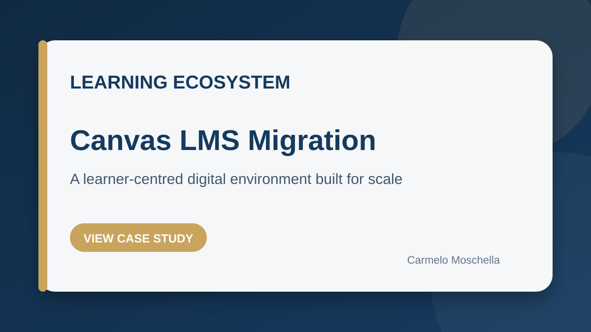
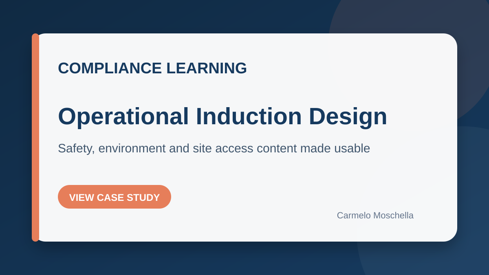

Brisbane City Council. Special Events Staff Training
Scenario-based digital learning designed to strengthen judgement, communication, customer service and incident response during public events.
Instructional design, scenario-based eLearning, compliance learning and technical documentation for government, vocational education, mining, healthcare and professional services.
Each project starts with the workplace problem, the learner context and the evidence required. The technology comes second.

Scenario-based digital learning designed to strengthen judgement, communication, customer service and incident response during public events.

A professional learning experience translating complex health and regulatory information into practical workplace decisions.

Redesigned the learner experience while migrating content, improving navigation, consistency and the use of analytics for continuous improvement.

Assessment and induction content covering site access, emergency procedures, fit for work, environment, chemicals, spills and common hazards.
Event staff and volunteers needed to respond consistently to unpredictable public-facing situations where safety, communication and judgement mattered more than memorising procedures.
I designed branching scenarios that placed learners inside realistic situations. Decisions produced immediate consequences and feedback, allowing learners to practise judgement in a safe environment.
Professionals needed an accessible way to understand a complex and sensitive topic without being overwhelmed by technical or regulatory detail.
I worked with subject matter experts to structure the content around workplace questions, realistic decisions and practical application. The learning design balanced accuracy, accessibility and learner confidence.
The existing learning environment required migration and redesign so learners could navigate content more easily and staff could use consistent structures and data.
I migrated and restructured courses, designed a consistent interface, integrated interactive learning objects and used Canvas analytics and rubrics to identify improvement opportunities.
Workers and visitors needed to understand critical site requirements across safety, environment, access and emergency response.
I developed concise learning and assessment content mapped to workplace responsibilities, including multiple-answer and applied knowledge questions.
Needs analysis, learning architecture, storyboards, scenario design, assessments and evaluation.
Articulate Storyline and Rise, Lectora, Captivate, Vyond, Camtasia and responsive learning experiences.
Canvas, Moodle, aXcelerate, Docebo and Reach 360. Migration, structure, UX and analytics.
VET assessment principles, rules of evidence, workplace compliance and applied assessment design.
Procedures, quick-reference guides, technical documentation and learner-facing support materials.
Structured AI workflows for analysis, drafting, review, prototyping and production acceleration.
I work with organisations that need practical, accessible and defensible learning solutions. Replace the contact placeholders below with your preferred details before publishing.
Download résumé